- Issue
- #94
- Runtime
- claude-code 2.1.278
- Frontend
- Vite + React Router + TanStack Query
- Database
- isolated SQLite
- Object store
- local SigV4 URL + HTTPServer
- Viewer
- admin + read-only member
Computer Use + trace API integration
M6-05 三栏轨迹查看器 smoke
在隔离 SQLite、真实 FastAPI、Vite 前端和本地对象存储链路上验证 attempt 级轨迹页。覆盖三栏联动、深链刷新与浏览器返回、快速切换、分页、degraded/unlinked、时钟回退、root fragment、大内容/raw 权限、恶意文本和窄屏布局；未发现新的集成缺陷。
14GUI 场景
13截图/下载证据
77Node 测试
0新增 smoke 缺陷
Environment and Artifact
2026-11-12 · macOS · Google Chrome + Node 25Scenario Matrix
14 pass| # | 场景 | 结果 | 断言 | 证据 |
|---|---|---|---|---|
| 01 | Ready 三栏联动 | PASS | 3 个 session、12 个 span；session tree、waterfall 与 inspector 同时可见，选中态与原型一致。 | 01-ready-three-pane.jpeg |
| 02 | Session 深链 | PASS | 点击 Explore 后 URL 写入 session/span，waterfall 切到该 session 的 9 个 span；刷新后恢复同一选择，浏览器返回恢复 root。 | 02-child-session-deep-link.png |
| 03 | 管理员签名地址 | PASS | raw 地址通过受控弹窗确认，不进入应用 URL；管理员随后真实打开对象并获得 HTTP 200。 | 02-raw-signed-url-modal.jpeg 08-raw-downloaded.jpeg |
| 04 | Degraded + unlinked | PASS | 缺少主文件调用证据时页面明确显示“已降级”，session 进入 UNLINKED SESSIONS，不伪装为正常树。 | 03-degraded-clock.jpeg |
| 05 | 时钟不可比 | PASS | 倒置时间触发页面 banner 与 waterfall 内提示，布局退回 ordinal timeline。 | 03-degraded-clock.jpeg |
| 06 | Root fragment | PASS | 缺失父 span 的 LLM 节点标为 ROOT FRAGMENT，inspector 解释父节点缺失但不猜测关系。 | 04-root-fragment.jpeg |
| 07 | 失败/空 attempt | PASS | failed attempt 显示执行错误与“没有可用轨迹”，session/span 为 0，未显示错误假数据。 | 05-empty-attempt.jpeg |
| 08 | 404 错误态 | PASS | 不存在的 attempt 返回 404、attempt_not_found 和重试操作，错误上下文可恢复。 | 06-error.jpeg |
| 09 | 处理中状态 | PASS | 无 trace_file 的 pending attempt 显示处理中说明并自动刷新，不渲染猜测 session。 | 04-incomplete-processing.png |
| 10 | 恶意文本安全渲染 | PASS | 包含 script/img onerror 的 fixture 仅作为纯文本显示，未执行脚本或事件处理器。 | 01-ready-three-pane.jpeg |
| 11 | 只读 thinking 权限 | PASS | 只读成员选择 THINKING 后看到权限锁定说明，完整推理正文未返回页面。 | 07-readonly-thinking.jpeg |
| 12 | 只读 raw 拒绝 | PASS | 只读成员点击原件按钮收到“当前账号没有写入权限”，未打开对象地址。 | 08-viewer-raw-denied.png |
| 13 | 窄屏布局 | PASS | 浏览器放大到 175% 后 inspector 下移，session 以选择器替代左树，主操作仍可访问。 | 05-narrow-175-percent.png |
| 14 | 跨 session 深链隔离 | PASS | 构造 session=root、span=child 的 URL 后，页面丢弃不同 session 的 span，恢复 root session 的首个合法 span，waterfall 与 inspector 保持一致。 | 13-cross-session-deep-link-safe.png |
Issues and Observations
No defects foundNo defects were found.
Evidence
14 screenshots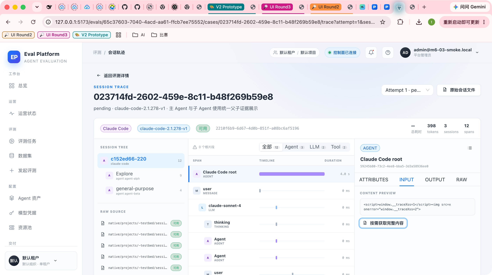
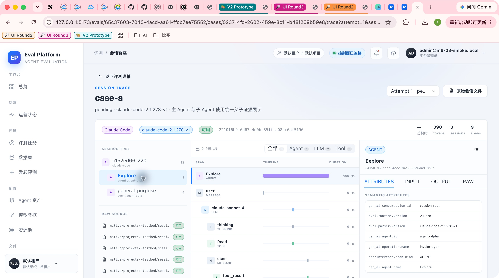
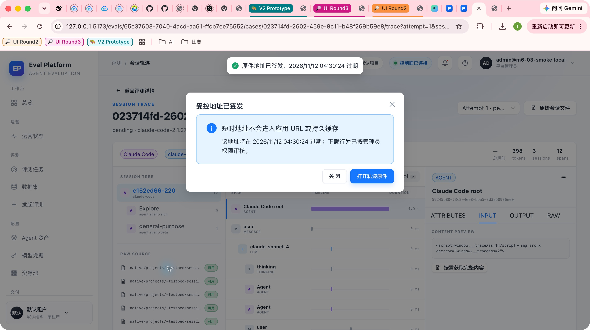
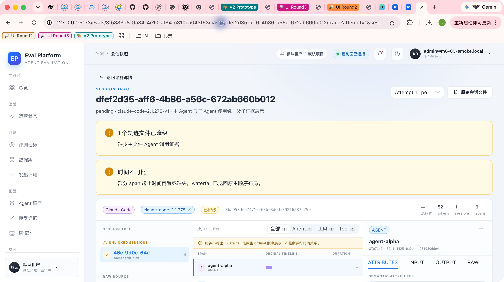
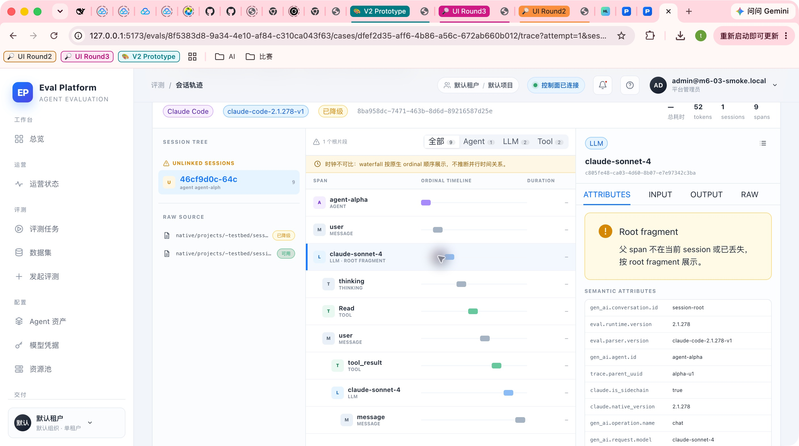
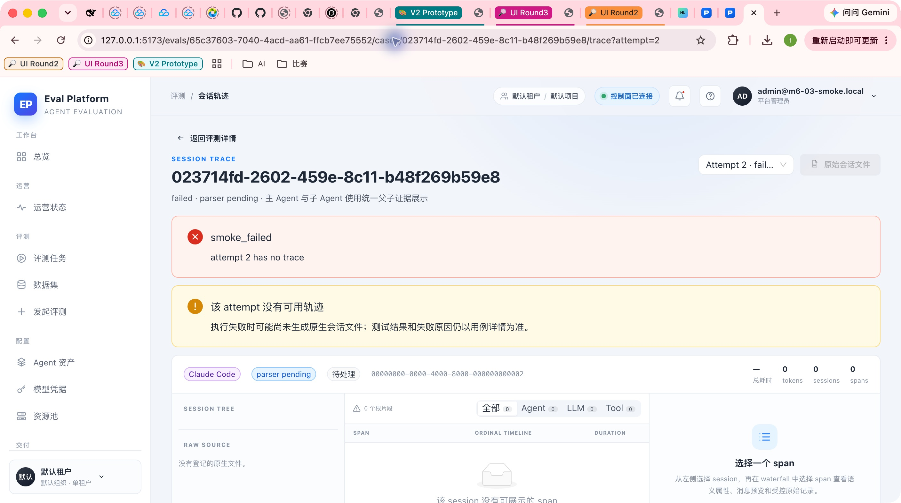
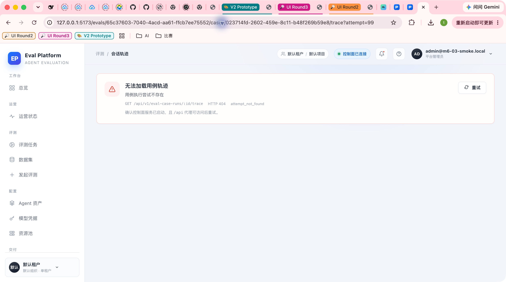
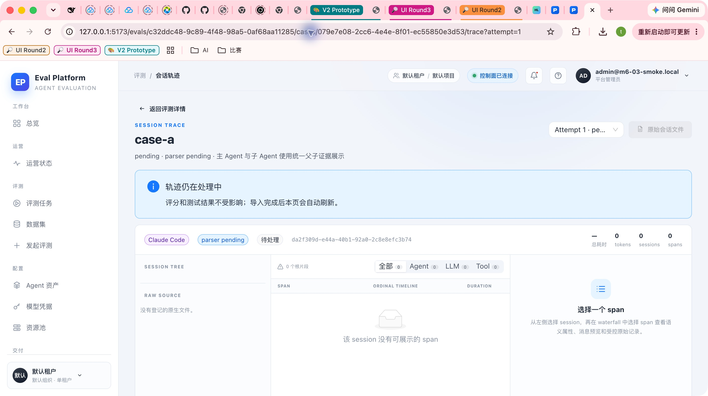
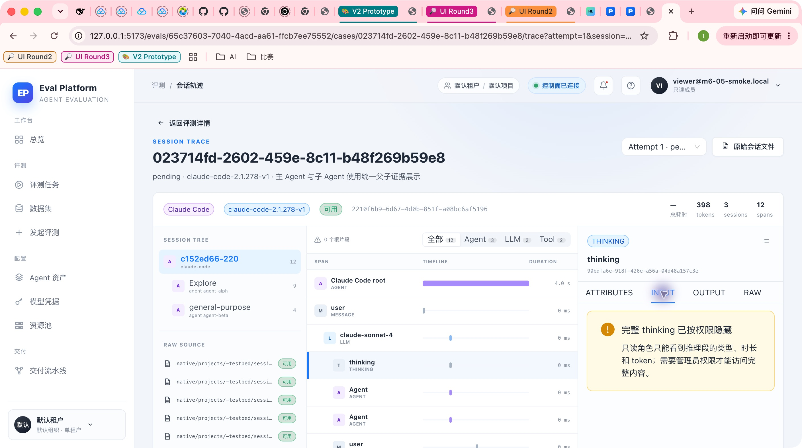
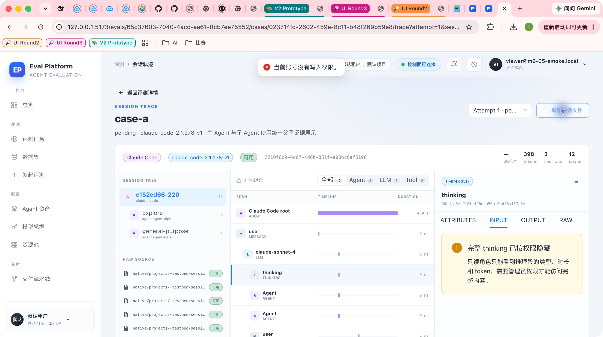
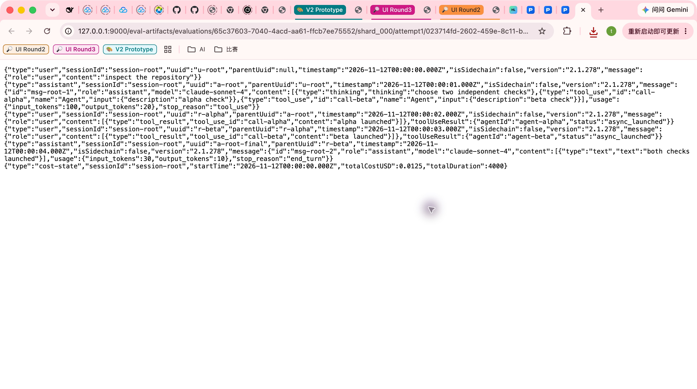
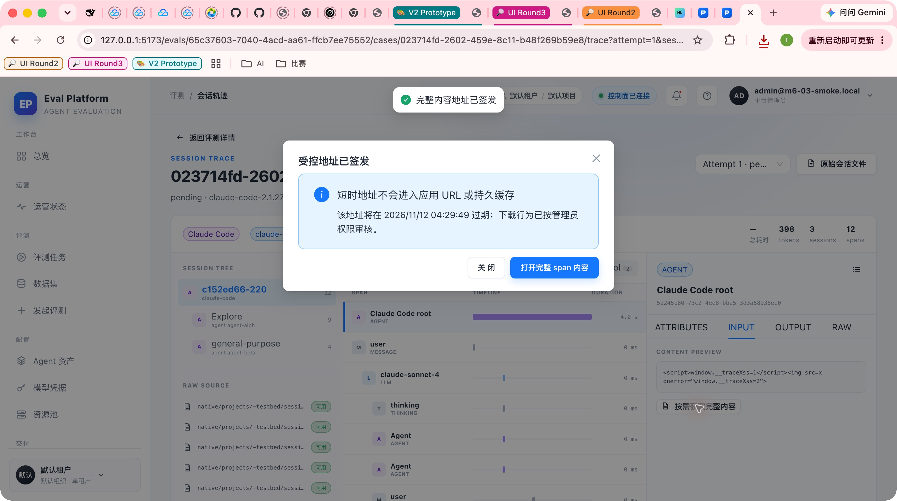
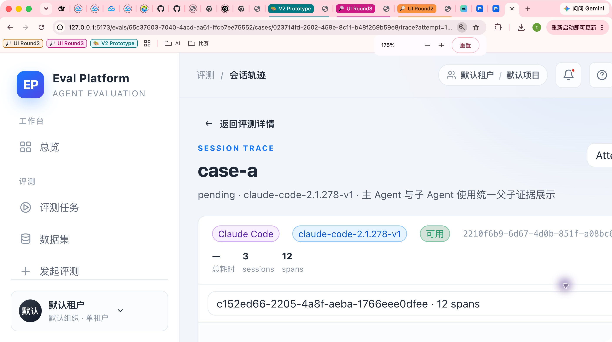
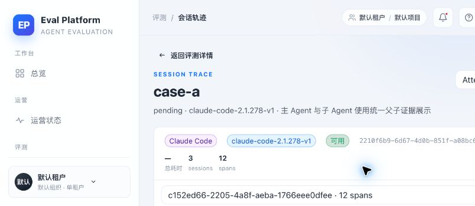
Automated Coverage Assessment
4 areas reviewed| 区域 | 自动化覆盖 | 结论 | 建议 |
|---|---|---|---|
Conclusion
Ready for review13 个 GUI/集成场景完成，未发现新的 smoke 缺陷；三栏查看器和状态边界与原型及设计一致。
- 真实 API、数据库、对象存储和浏览器链路均已执行。
- 正式 PR review 仍需结合自动化测试与代码 diff 独立复核。
M6-05 · attempt-level trace viewer · 2026-11-12